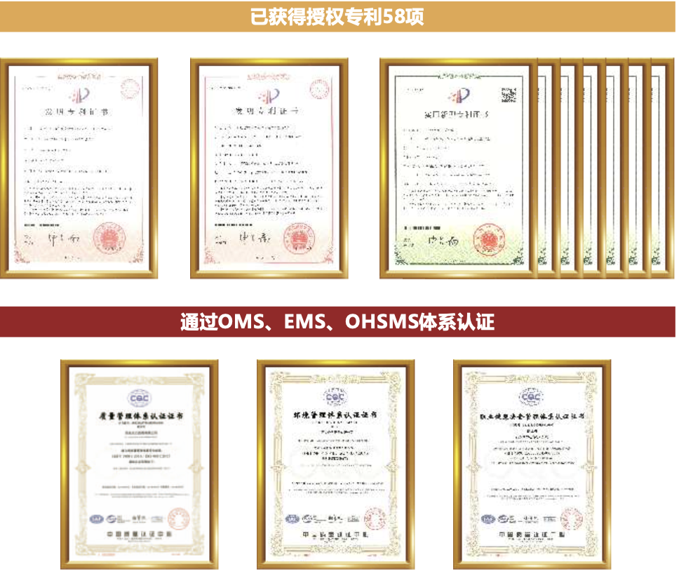

工厂化生产稳定型天然沥青
不同于将天然沥青作为外加剂使用的传统工艺，湖北坦途高科有限责任公司利用“天然沥青微 粒化技术”，自研开发出完整成套专业天然沥青生产设备，通过工厂化、标准化生产，严格控制技术指 标，生产出多型号的稳定型天然沥青产品，满足不同应用需求。
天然沥青传统干法及湿法工艺的缺陷
* 传统干法工艺缺陷：粉尘污染严重，无法发挥结合料作用，沥青质量差异大
* 传统湿法工艺缺陷：沉淀物堵塞管道造成罐底沉淀，沥青有效成分释放有效，质量差异大
Tan Tu Cutting-Edge Tech
不同于将天然沥青作为外加剂使用的传统工艺，湖北坦途高科有限责任公司利用“天然沥青微 粒化技术”，自研开发出完整成套专业天然沥青生产设备，通过工厂化、标准化生产，严格控制技术指 标，生产出多型号的稳定型天然沥青产品，满足不同应用需求。
* 传统干法工艺缺陷：粉尘污染严重，无法发挥结合料作用，沥青质量差异大
* 传统湿法工艺缺陷：沉淀物堵塞管道造成罐底沉淀，沥青有效成分释放有效，质量差异大
坦途高科通过专利技术，将天然沥青中的无机物平均粒径减小至5微米，且90%以上颗粒粒径小于 12微米，实现天然沥青的“液化”“活化”，得到可长时间运输及存储的稳定型天然沥青产品。 并可根据交通量和气候环境的不同，提供不同技术指标的，系列化产品。
根据斯托克斯定律，颗粒的沉降速度随粒径 的减小而减小。在一定条件下当无机物微粒粒径达 到某一范围时，浮力和重力能实现力学平衡，微粒 便可稳定悬浮于沥青中而不沉降，达到天然沥青的 液化效果，使得天然沥青结合料，能以成品结合料 的形式，长时间运输存储不离析，便于大规模工程 化应用。
天然沥青颗粒经过充分破 碎挤压，并在高温高压等综合作 用下，天然沥青颗粒内部腔室及 通道内的沥青组分得到充分释 放，利用天然沥青独特的组分优 势，对沥青胶体结构实现分子级 改性效果，达到活化目的。